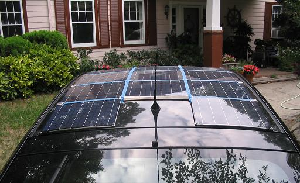
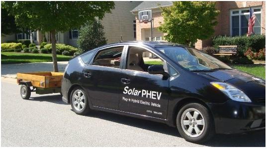
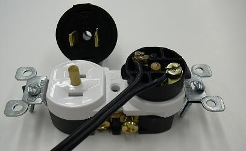
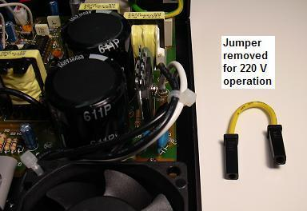
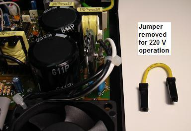
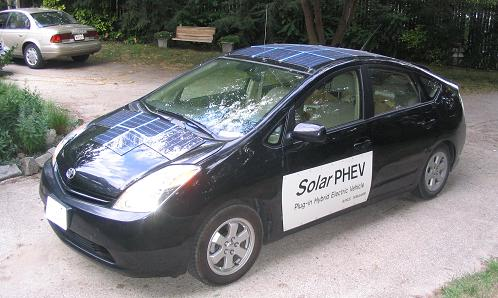

Field Day Prius Power
Field Day Prius Power
Field Day Prius Power
Field Day Prius Power
 .
.
Field - Power - To - Go!
This page describes my addition of solar panels to a salvage Prius to make a portable energy system. By combining high power solar with thousands of watts of backup gasoline driven generator power in the Prius this vehicle is able to provide emergency power for field operating events such as the annual Amateur Radio Field Day or Scouting events shown above. There are several other overlaping and related pages:
Electric Vehicles Provide Emergency Power: Look at the Satellite view of NY/NJ after Hurricane Sandy put millions in the darak without power. But anyone with a Prius or an Electric car such as the Leaf can simply run their emergency appliances from their cars with a simple 1200W AC inverter as showsn on this page. Even Nissan and Toyota are now planning on doing this as an added option. Toyota recognizes the value of the 50 KW generator in a Prius for emergency power . See article. And Nissan is realizing that its Electrtic Leaf's have enough battery power to run a house under these conditions for a week!.
No GAS LINES Either: Another counter-intuitive advantage of an EV is during a power outage as shown here. Although nearly 70% of gas statinos were nocked out without any power to pump gas into extremely long lines of cars, an EV has no such restrictions. They simply drive to an area where the lights are on, and plug-in to any available outlet. For abotu 20 cents an hour, they can recharge. And looking at this map, of those millions of people, no one was more than a mile or so from someone with power.
Emergency Power for Field Day (or Storms!): Every year Ham Radio operators across the USA take their communications equipment to the field for a national operating contest to demonstrate emergency preparedness by operating for 24 hours on Emergency Power. . Historically, this involves noisy gas powered generators for high power stations, or solar power for lower power operating stations.
The photos above show several youth at the Anne Arundal Radio Club Field Day in 2004 participating in a demo of Amateur Radio Satellites using simple chicken-wire antennas. . Or see our typical set-up down at City Dock in Annapolis in 2008.
PRIUS POWER BACKGROUND: The Prius has a 12 volt electrical system for normal car accessories, a 220 Volt 7 Amp-Hour Battery for propulsion assistance, a 50 kW motor-generator, a 50 Kw DC/DC converter/inverter, a 2nd motor-generator, and a 76 Hp gas engine all integrated into a seamless power system as shown at right. See also a Leaf system. Just hook up a 1 kW innexpensive ($100) AC inverter to the 12v battery to power your emergency needs as shown. . When the ignition is "on" (called READY) in the Prius, a built-in 100 amp DC/DC converter is powered up to provide 12 VDC to all normal car circuits and accessories. . In this READY state, the Prius engine will warm up, and then shut down. . It can remain in this state indefinately and provide plenty of electrical power and, as the energy system is depleted, the engine will automatically start to maintian the charge on the battery. . It can maintain this "READY" state indefinately until the gas tank is empty. See more on my Solar Plug-in Prius
115 VAC Power Anywhere: The Prius provides up to 100 Amps at 12 volts for all the conventional car accessories via a water-cooled DC/DC converter. . To this 12 volt system just like in any car, I add an off-the-shelf 1000 Watt 115VAC inverter in the trunk with outlets on the back of the car. This is by far the easiest way to use the Prius as an emergency power station. This is simple, easy to do on any car and is the basis for my power-outage emergency power for my house to run the minimal keep-alive loads. The advantage of the Prius is that you can keep the ingnition on at all times, and the Prius will know when to start the engine to keep the 12 volt battery up to snuff. See further testing on the fuel economy of this approach: Bob Wilson's conversion. The only disadvantages of using the 12v car system for these high power levels are:
Prius Generator Economy: The Prius (using this 1 kW inverter on its 12V battery) appears to generate electriciy just as efficiently as a small gas generator. The plot to the right is based on Bob Wilson's conversion for the Prius plus the published gallons per hour for 5 common emergency power plants sold at Home Depot. The chart shows the comparison KWH per gallon and shows two green lines that seem to bound the trend (except for the higher efficiency of the 3750 W plant). Each of the generators (except the Prius) was running at half-rated load. Although the Prius rated generator is 50kW, in this example we are only using a 12 volt 1 kW rated inverter, so the 1 KW point is FULL load. Whereas the Prius 800W point is operating at 80% and is 10% better than the 1850 W unit. Please note, all of the units greater than the 1850W generator will show WORSE efficiency when operated at only 800W, so the Prius is one of the best at the desired load of a few lights, and the home's oil or gas furnace blower.

220 Volts DC: The larger 220 VDC 7 Amp-Hour Prius battery is about 6 times bigger than the 12 volt battery and provides 200 to 240 VDC depending on state of charge. . Thats about 1.5 KwH of battery capacity. . See the 220 VDC outlets on the back of my Prius in the photo at right. . Most modern electronic loads can use this power directly so distributing power from this 220 VDC power source has several advantages:
220 VDC Disadvantages: Other than modern electronics and power supplies, most things will not run on 220 VDC. Compact Flourescent bulbs will not (though ones from Europe will do just fine). The Prius will still draw the same 200 Watts of wasted overhead system power if left in READY standby for indefinate operation as it does when left in READY mode providing power at 12 V and the 115VAC added inverter.. . But with the much larger capacity of the main 220 VDC power system, for small loads, the Prius can be powered down, to save that inefficiency and allow it to run external loads much longer. . But there are disadvantages to 220 VDC:
Further down the page are examples of using this 220 VDC power. But first, there is another source of power in my Prius as shown above.

SOLAR-POWER: . What's unique about this project is the addition of solar panels to the Prius to not only provide free energy to offset the cost of gas, but also to provide an effective application for solar power in the first place. . The solar panels shown here can provide as much as 215 peak Watts of power good for about 1.7 KWh of free electricity when parked for 8 hours in the Arizona sun. . Unfortunately, only 800 Wh or less is available from the average Maryland Sun.
PURPOSE - Power-to-GO: . The purpose of this conversion is to put solar panels where they can be more useful than stuck on the roof of my house. On my hybrid they may gain 10 to 20% in MPG. . But like many other solar energy projects, this investment has an indeterminate cost-effective break-even point, because it solely depends on how much you need power when you are not plugged into the grid. Solar Power portability gives peace-of-mind where there is no gas or plug-in electricity available. . (more on my Solar Prius)...

And if you can take solar power where you need it, then its value can be far greater
than 15 cents per KWH. . And if you need power in the field, and don't have any, then solar
power is cheap at any price. . Just consuming it in the Prius is an equivalent
payback of 30 cents per KWH which is better than the 15 cents at home.
The incentive for this conversion comes from the simple
economics of solar power:
 Emergency Solar Power Trailer: For field events and emergency power on the go, the solar
trailer to the right contains about 200 watts of solar panels (20 years old) plus a deep cycle marine battery and
1200 Watt inverter. The trailer is configured with the top wood section designed to fold over to
not only protect the solar panels during travel but to also hide them out of sight when parked
or not in use. When closed, the top wood section looks like an open top trailer with about
6 inch sides. The false bottom conceals the nested solar panels and makes
the sitting trailer less attractive to sticky hitches.
Emergency Solar Power Trailer: For field events and emergency power on the go, the solar
trailer to the right contains about 200 watts of solar panels (20 years old) plus a deep cycle marine battery and
1200 Watt inverter. The trailer is configured with the top wood section designed to fold over to
not only protect the solar panels during travel but to also hide them out of sight when parked
or not in use. When closed, the top wood section looks like an open top trailer with about
6 inch sides. The false bottom conceals the nested solar panels and makes
the sitting trailer less attractive to sticky hitches.
In addition, when open, the bottom set of panels are also hinged to give access to the battery and inverter below. Plus this area provides hidden storage for extra power cords, cables and accessories. (see picture) A Maximum Peak Power Tracker charger assures 95% charging efficiency. The panels are wired in series parallel as a 24V system at 6 amps, but the MPPT charger uses this to produce almost 15 amps at 13.8 VDC.
Field Day 2010: We hold Field Day at City Dock in Annapolis. This year I used both the Prius and the trailer to provide power. Sara Alouf walked by and took this photo with her phone. The trailer in the foreground with its inverter provided 115 VAC for the Field Day trailer in the background as well as charging power for the electric scooter for food runs.
SOLAR BATTERY: . My origional design series'ed all the solar panels to 250 VDC for parallel connection with the Prius system. This needed a 240 Volt parallel battery made of 18 gel-cells. See photo. But this is sub-optimal because the cells are not all at the same angle to the sun, so the entire array is limited by the worst panel at any time. Further, all my electronics had to be custom built for 240 VDC. And there were dangers messing so close in parallel with the Prius system (overcharging, fires etc). In my next system all solar panels will be series-paralleled to 24 VDC and a pair of deep cycle marine batteries. These will use a doubler on a common 1 KW inverter to get 115 VAC for Field Day and a 240 VDC boost for the Prius.

220 VDC POWER CONNECTORS: . One of the first issues with distributing 220 VDC power is finding a safe connector that is innexpensive and readily available yet, cannot be confused with any other electrical connector. . This connector must be unique to prevent anyone from plugging in any non 220 VDC device. . The connector we came up with was a standard two-prong power plug but with two PREVENTION devices to prevent inadvertant plugging in of other devices. The connector is shown to the right:
A standard two-prong socket is used, but without the usual 3rd ground pin. . This blocks the use of any 3 wire 115 VAC power cord. . In addition, a 3/16ths inch nylon protrusion is fixed to the center of this receptical inbetween the two prongs. . This blocks the use of any 2-wire 115 VAC devices. . To make a mating two prong plug, a standard replacement plug is used but the center is drilled out to pass this blocking pin as shown in the photo. . On the right, this center pin protrudes into an unused, and isolated area of the hard plastic plug construction. . These connectors cost under $2 each for both the plug and the receptical.

Lightweight Power Cords: . Because of the much lower current demand at 220 VDC, a #18 zip cord can easily carry plenty of power over hundreds of feet. . In the photo above, the original 25 feet of large orange extension cord were removed and about 120 feet of #18 lamp cord will fit on this convenient spool system. . The current carrying capacity of #18 is as high as 10 amps, but I limit mine by fuses to only 5 Amps. . Again, the outlets are blocked from any inadvertant use by the uninformed by the dual protection-blocking system. . Only switching power supplies or other loads that can operate on 220 VDC are provided with these matching plugs.
Long Distance Power Distribution: For much longer distances, power can be distributed using a Single Wire Earth Return or SWER system. I have a 6" spool of #20 wire that is 3200 feet long takes up less room than the 100 foot spool shown. Using it and a few ground rods, a few hundred watts can be delivered over nearly a kilometer to power a typical emergency amatuer radio station.. See my APRS SWER System

220 VDC Switching Power Supplies: . The reason distribution at 220 VDC is simple is beacuse almost all modern power supplies are designed using switching regulators to elminate the large, heavy and bulky 60 Hz power transformers. These switching power supplies work on DC input that is obtained from 115 VAC or 230 VAC via an input rectifier as shown above. . These supplies when set to the 230 VAC position will also work well on 220 VDC.
 .

.

LAPTOP Power supplies: . For simpliity, most laptop switching power supplies are also dual voltage (115/230 VAC) but to avoid the hassle of a switch, the supply is simply designed to operate on any voltage between 115 to 230 VAC directly without a switch. These supplies can often be plugged directly into 220 VDC.
250 VDC Solar Backup Power: Just because the grid goes out and the grid-tie inverter safely shuts down to protect linemen, your array still can produce your full electrical power as long as the Sun shines. Since most modern electronics will run directly on 250 to 330 VDC just as easy as they will run on 100 to 240 VAC, it makes sense to wire your solar panels for about 250-300 VDC so you can use it when the grid goes down. So instead of wiring your grid-tie array for 500 VDC to minimize wire loss, wire them in series parallel to about 250 to 330 VDC so that you can use this power directly if needed. Just about any system that has a nameplate showing it is good for 100 to 240 VAC will work on 150 to 330 VDC too! And almost all modern electronic systems come that way! See the diagram below:

Any experimentation you do with your Prius or your Electronics is at YOUR OWN RISK!
(YOUR MILEAGE MAY VARY!)...
Bottom line: . If you are going to invest in solar power anyway, you may
as well put it on your car where you can use it to offset the cost of gas and
where you can take it with you wherever you go or might need it. Field events,
emergencies, or just watching the kids soccer match (with the Prius electric A/C)...
This array has been designed to just fit the size and shape of the Prius while having
a good voltage capacity for easy charging.
ANALOG INSTRUMENTATION: . A retro analog instrument panel was added to
keep track of the electrical power
going into and out of the Prius and added Solar battery and solar panels.
. There is also an added tach and vacuum gauge for the gas engine.
. The left meter is 150 to 300 volts and the right one is
-50 to 0 to +100 amps. .
The APRS ham radio below the dash integrated with GPS provides tactical situational
awareness of the positions, status and messages of similarly equipped Amateur Radio
mobiles in the surrounding area.
. The APRS network is linked to the internet and so you can always
see where I am.
Bob Bruninga, WB4APR, Naval Academy Satellite Lab

These notes are only intended to share my results and for no other purpose!

{kind=link}
{kind=link}
{kind=link}